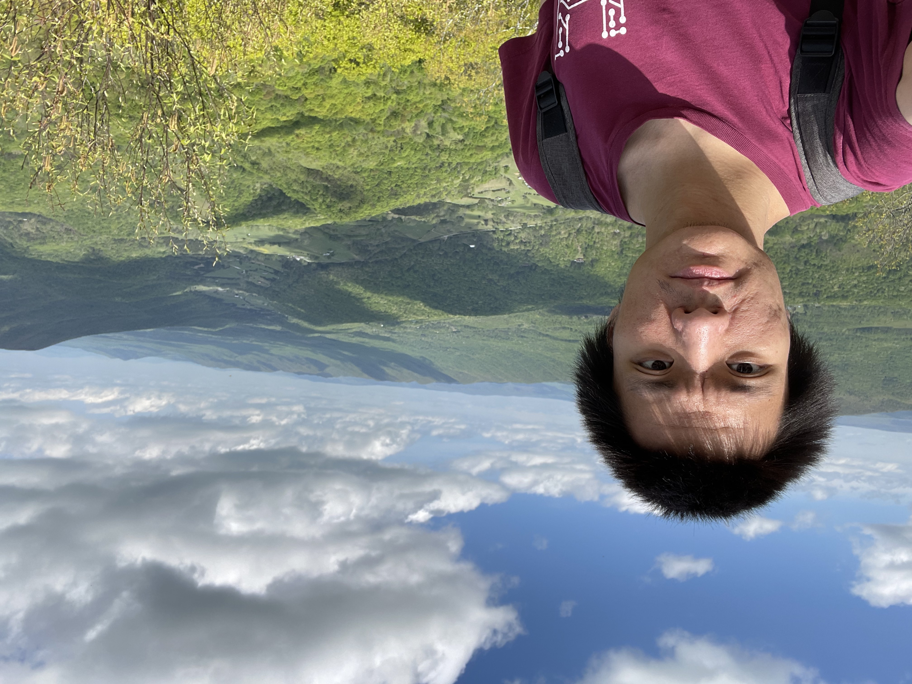

|  |
Jinghao Jia Ph.D. Student Department of Computer Science University of Illinois at Urbana-Champaign 3111 Siebel Center 201 N. Goodwin Ave. Urbana, IL 61801, USA email: jinghao7@illinois.edu |
I am a Ph.D. student at the University of Illinois at Urbana-Champaign. I work closely with Professor Tianyin Xu and Professor Dan Williams from Virginia Tech. I received my bachelor degree in Computer Science from UCSD prior to grad school. My research interest falls in the area of Operating Systems. Specifically, my research focuses on constructing safe and expressive kernel extensions (e.g. eBPF and more) and their applications.
Making Linux Fly: Towards a Certified Linux Kernel
In Linux Plumbers Conference, Vienna, Austria, Sep. 2024
Wentao Zhang, Jinghao Jia, Darko Marinov, and Tianyin Xu
Measuring and Understanding Linux Kernel Tests
In Linux Plumbers Conference, Vienna, Austria, Sep. 2024
Tingxu Ren, Wentao Zhang, Darko Marinov, Jinghao Jia, and Tianyin Xu
Source-based code coverage of Linux kernel
In Linux Plumbers Conference, Vienna, Austria, Sep. 2024
Wentao Zhang, Darko Marinov, Jinghao Jia, and Tianyin Xu
Fast (Trapless) Kernel Probes Everywhere
In Proceedings of the USENIX Annual Technical Conference (ATC ’24), Santa Clara, CA, Jul. 2024
Jinghao Jia, Michael V. Le, Salman Ahmed, Dan Williams, Hani Jamjoom, and Tianyin Xu
Advancing Kernel Control Flow Integrity with eBPF
In Linux Plumbers Conference, Richmond, VA, Nov. 2023
Jinghao Jia, Michael Le, Salman Ahmed, Dan Williams, Hani Jamjoom, and Tianyin Xu
Practical and Flexible Kernel CFI Enforcement using eBPF
In Proceedings of the ACM SIGCOMM Workshop on eBPF and Kernel Extensions (eBPF ’23), New York, New York, Sep. 2023
Jinghao Jia, Michael V. Le, Salman Ahmed, Dan Williams, Hani Jamjoom
Kernel extension verification is untenable
In Proceedings of the Workshop on Hot Topics in Operating Systems (HotOS ’23), Providence, RI, Jun. 2023
Jinghao Jia, Raj Sahu, Adam Oswald, Dan Williams, Michael V. Le, and Tianyin Xu
Programmable System Call Security with eBPF
arXiv:2302.10366, Feb. 2023
Jinghao Jia, YiFei Zhu, Dan Williams, Andrea Arcangeli, Claudio Canella, Hubertus Franke, Tobin Feldman-Fitzthum, Dimitrios Skarlatos, Daniel Gruss, and Tianyin Xu
Revisiting eBPF Seccomp Filters
In Linux Plumbers Conference, Dublin, Ireland, Sep. 2022
Jinghao Jia, YiFei Zhu, Andrea Arcangeli, Hubertus Franke, Tobin Feldman-Fitzthum, Claudio Canella, Dimitrios Skarlatos, Daniel Gruss, Dan Williams, and Tianyin Xu
I have contributed to the Linux kernel -- you can find my contribution history from the LWN kernel source database.